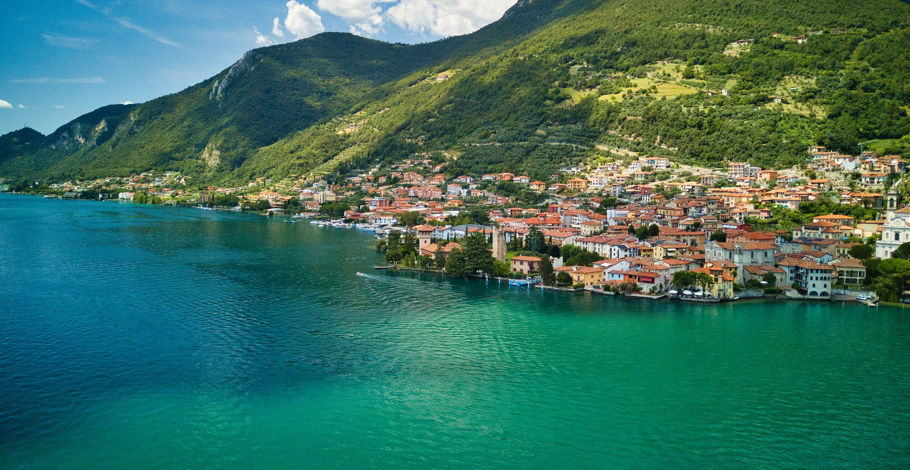
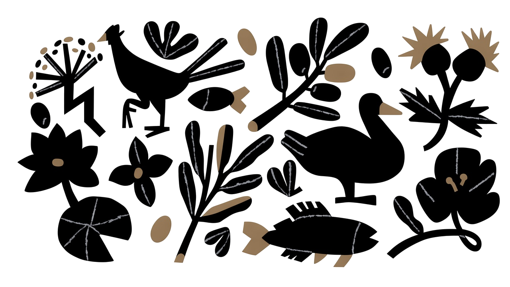
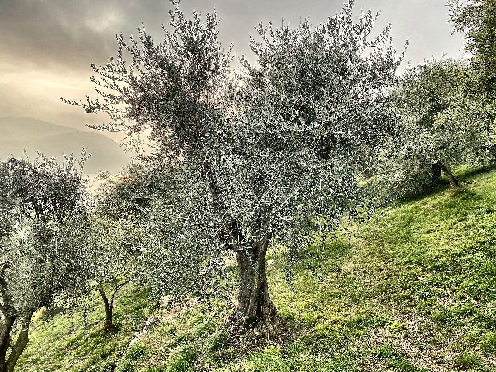
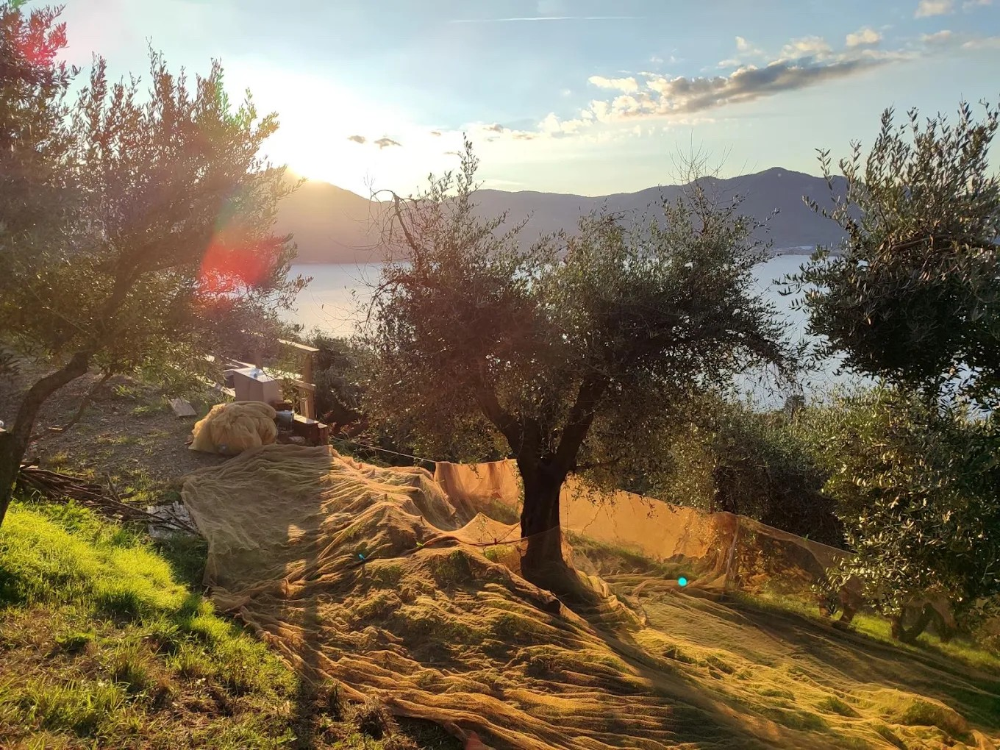
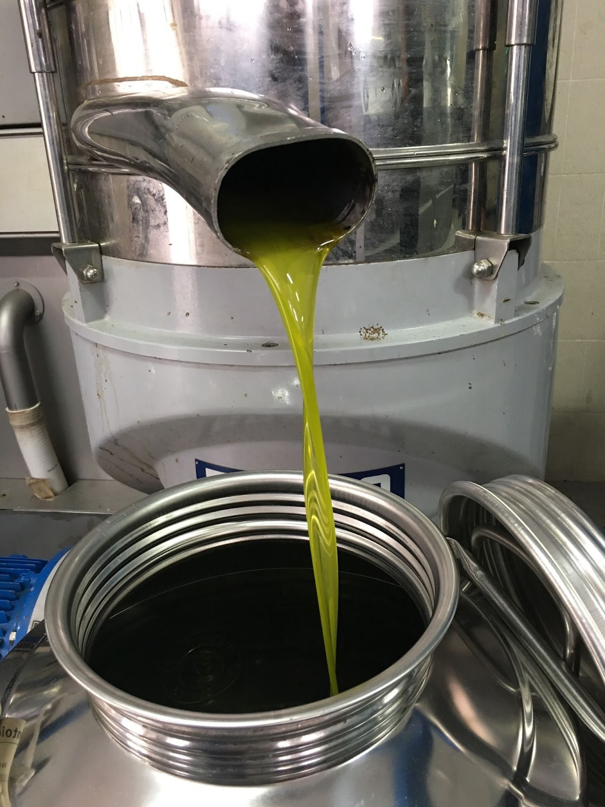
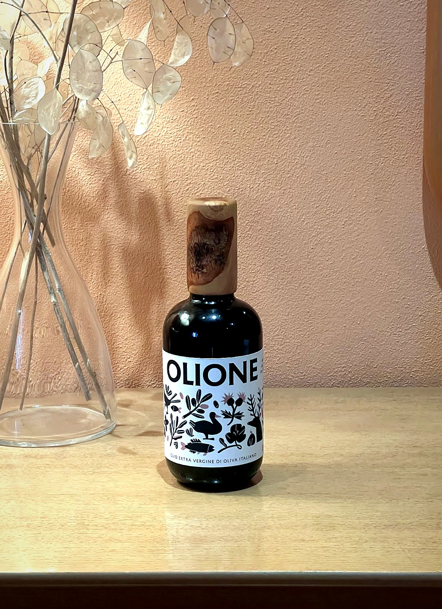

Predore · Lago d'Iseo
Carlo Duci · Olivicoltura

Prodotto dalla cura del nostro territorio
L'uliveto
Tra lago e pietra
Coltiviamo olive su terrazzamenti sostenuti da antichi muri in pietra, affacciati sul Lago d'Iseo, nel comune di Predore.
Qui il microclima del Sebino accompagna la crescita degli olivi: luce, pendenza e cura quotidiana del territorio danno carattere al frutto e, di stagione in stagione, all'olio.

La raccolta
Ottobre, ogni sera al frantoio
Raccogliamo le olive nelle prime settimane di ottobre, quando il frutto è ancora fresco e pieno di aroma.
Dopo la raccolta, ogni sera, le portiamo al frantoio per la frangitura e l'estrazione dell'olio: tempi brevi, per custodire la qualità dell'extravergine.

Al frantoio
Dalle olive all'olio
Un percorso meccanico, senza intermedi chimici: dalla pulizia del frutto fino alla filtrazione, ogni passaggio prepara un extravergine limpido e riconoscibile.

- Pulizia e lavaggio
- Frangitura
- Gramolatura
- Estrazione
- Separazione e filtrazione
I nostri prodotti
Olio extravergine di oliva di qualità superiore
Olione è un olio extravergine di oliva italiano di categoria superiore, ottenuto direttamente dalle olive e unicamente mediante procedimenti meccanici.
In bottiglia da 0,5 l, pensata per la tavola: un prodotto di piccola misura, legato ai terrazzamenti di Predore e alla campagna di raccolta dell'anno.

Contatti
Carlo Duci
Per assaggi, disponibilità della campagna in corso o informazioni sull'olio: siamo a Predore, sul Lago d'Iseo.
- olioevopredore@gmail.com
- Telefono
- +39 320 379 7518
- Social
- Indirizzo
- Via San Michele 34, 24060 Foresto Sparso (BG)